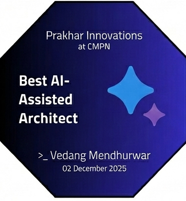
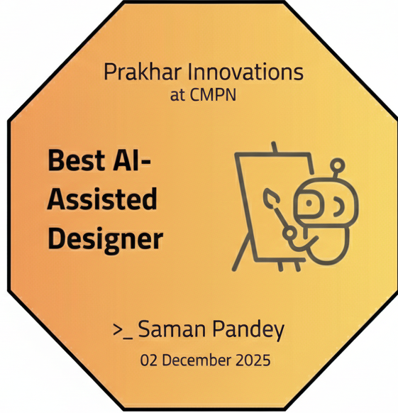
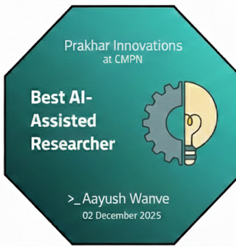
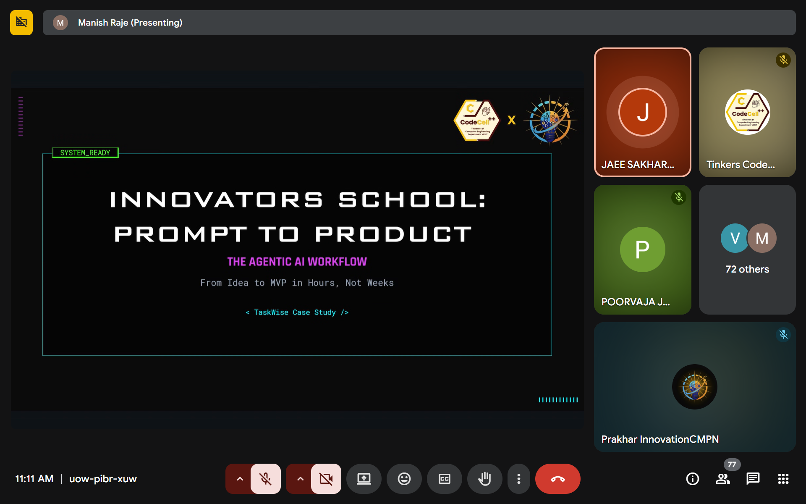
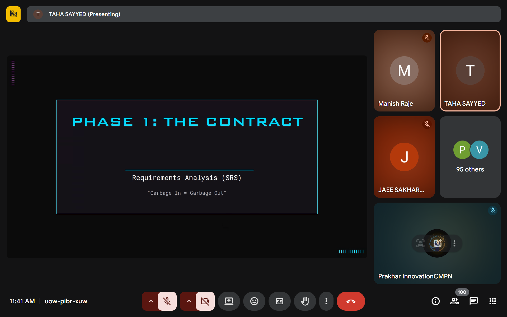
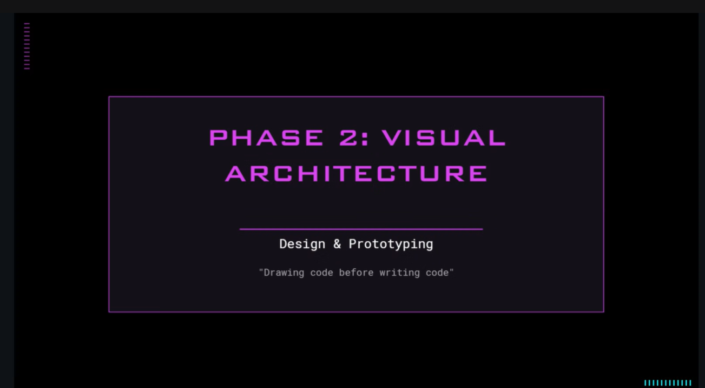
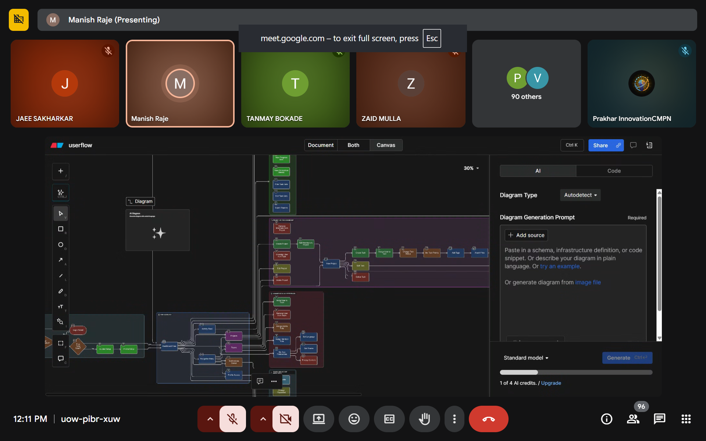
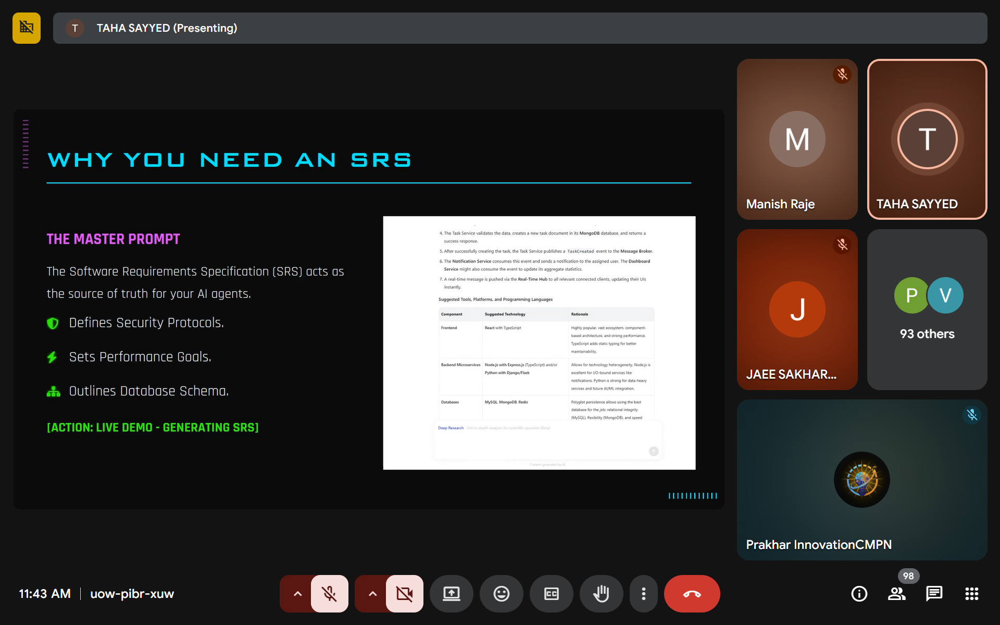
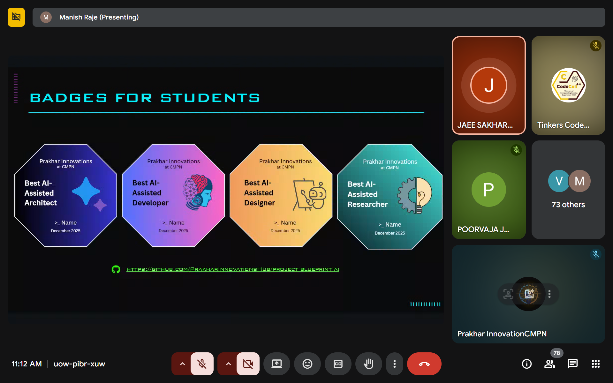

Innovators School: From Prompt to Product
Agentic AI for Startups · December 2, 2025 · VESIT
Introduction
The Innovators School: From Prompt to Product session was designed as an experience rather than a lecture. It brought together students who were curious about how ideas evolve beyond whiteboards and discussions into structured, working products. Hosted at VESIT, the session introduced participants to a new way of thinking — one where clarity of intent matters as much as technical execution.
Instead of treating Artificial Intelligence as a shortcut, the session positioned it as a collaborator — a tool that responds best when guided by thoughtful prompts and well-defined goals.
Why This Session Was Conducted
Many student-led projects fail not because of lack of skill, but due to unclear problem understanding. This session was conducted to address that exact gap. The intent was to help students slow down at the right moments — to question assumptions, validate ideas, and structure their thoughts before writing a single line of code.
By introducing Agentic AI workflows, the speakers demonstrated how modern teams convert abstract ideas into tangible outcomes while maintaining control over decision-making.
Event Context
The workshop was held on 2 December 2025 at Vivekanand Education Society’s Institute of Technology. Organized by Prakhar Innovations under the CMPN department, the event was supported by CodeCell++ Tinkerers, IIC, and IQAC. Nearly a hundred students participated, representing diverse interests in technology, startups, and design.
How the Session Unfolded
The session opened with a simple but powerful question: “What exactly are you trying to solve?” This set the tone for the entire workshop. Students were guided through real startup scenarios where ideas often look promising but collapse due to weak foundations.
Through live demonstrations, tools such as Perplexity AI were used to understand market needs and competitor landscapes. This was followed by structured documentation using Notion, where participants observed how clarity in requirements directly impacts development efficiency.
Visual thinking played a major role in the second half of the session. User flows were generated, interface layouts were explored using Figma, and system-level thinking was introduced through architecture planning tools. Throughout this process, students were reminded that AI accelerates thinking — it does not replace it.
Student Achievements
A key highlight of the Innovators School session was the recognition of students who demonstrated exceptional understanding and application of the concepts discussed. These students stood out for their ability to translate prompts into meaningful product ideas within a limited time.

Vedang Mendhurwar
Recognized for presenting a well-structured product concept with clear user flow and logical feature prioritization (Best AI Assisted Architecture).

Saman Pandey
Appreciated for innovative prompt usage and strong alignment between problem statement and proposed solution (Best AI Assisted Designer).

Aayush Wanve
Awarded for clarity in documentation and thoughtful system design approach (Best AI Assisted Researcher).
Moments from the Session






Conclusion
Innovators School: From Prompt to Product was not just about tools or trends. It was about mindset. The session encouraged students to think deeply, plan responsibly, and use AI as an extension of their reasoning rather than a shortcut. By the end of the workshop, participants walked away with a clearer understanding of what it truly means to build a product in today’s evolving technological landscape.